Von einer Lehrkraft für Lehrkräfte
Über 6.800 fertige Unterrichtsmaterialien mit Lösungen – Lesespurgeschichten, Rechenwelten, Lesespaziergänge und Bastelvorlagen, 3-fach differenziert (★/★★/★★★).
Neu für November & AdventAlle Materialien
PDF zum Ausdrucken, in Farbe und als Schwarz-Weiß-Kopiervorlage. Jedes Material mit Musterlösung – keine Vorbereitung nötig.
Drei Niveaustufen bei Lesespurgeschichten, Wortspeicher bei Lückentexten, Hörverstehen per QR-Code: Jedes Kind arbeitet auf seinem Niveau.
Kernthemen aller Fächer, abgestimmt auf die Lehrpläne der Bundesländer und alle Schularten – ohne Klassenstufe auf dem Blatt.
Barbarazweige, Nikolaus, Weihnachtsmarkt, Schnee und Tiere im Winter – alles für die dunkle Jahreszeit.


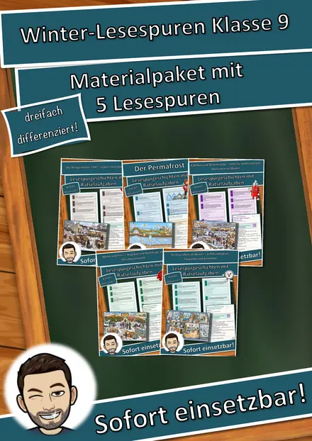
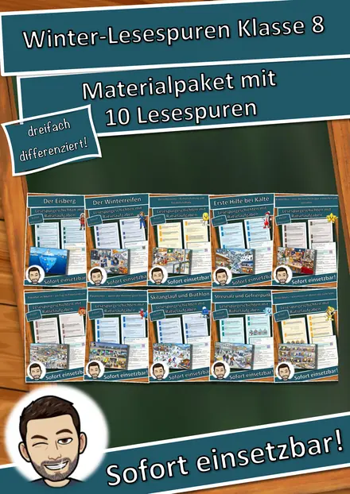
Laterne, Igel, Zugvögel und Novemberwetter – Materialien rund um St. Martin und den späten Herbst.


Neu
Die neuesten Materialien aus meinem Shop – frisch geprüft und auf eduki erhältlich.
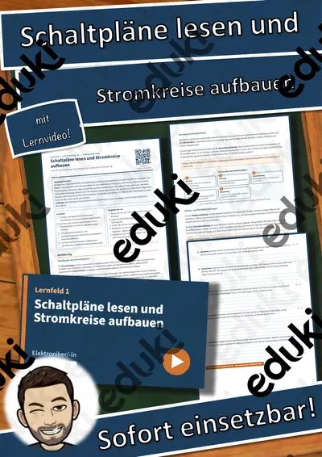


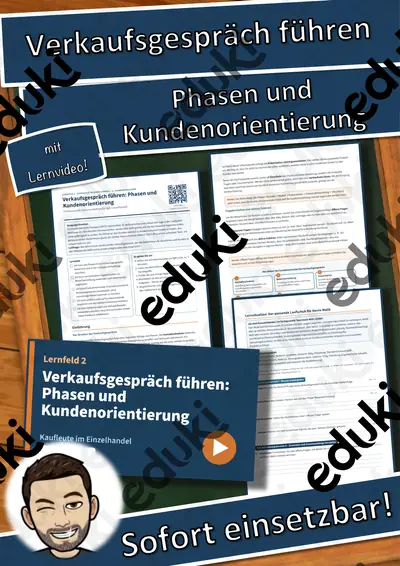
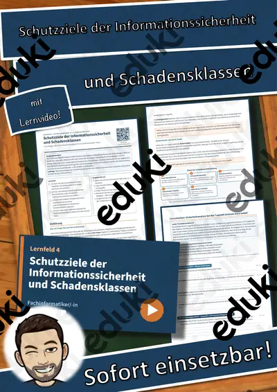


86 Materialien gibt es auf eduki aktuell kostenlos – nach Fach und Klasse sortiert.
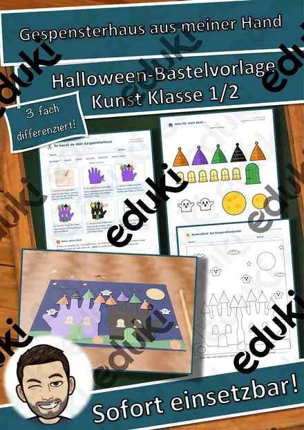


Neu
Analoge Mathe-Rollenspiele für Klasse 1–4: Die Klasse spielt eine Welt nach und rechnet dabei – 3-fach differenziert, mit Lösungen.
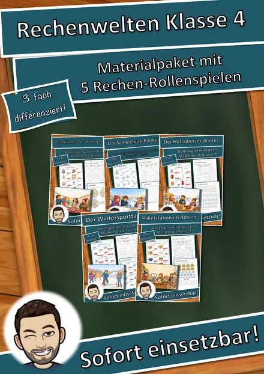
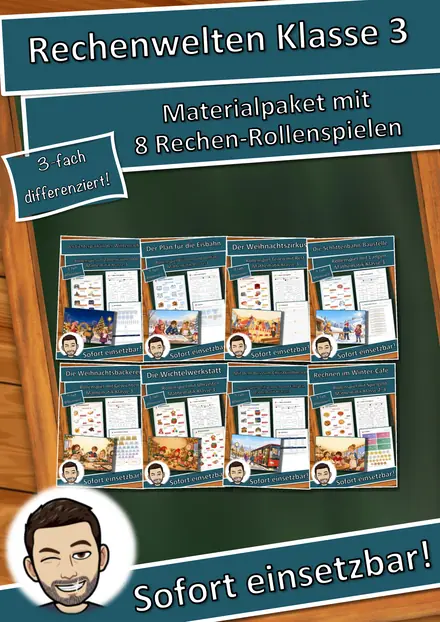
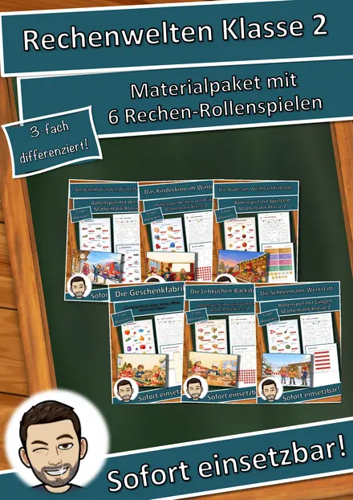
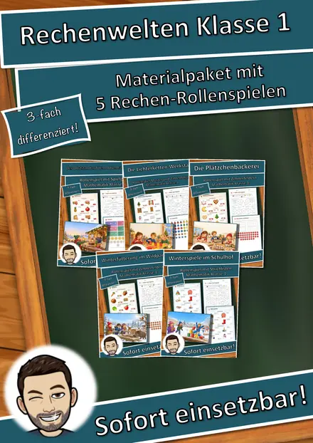
Neu
Lesen in Bewegung für Klasse 2–4: zehn Bildkarten im Rundlauf, drei Lesestufen und ein Lösungswort zur Selbstkontrolle.
Neu
Basteln und Lernen für Klasse 1–4: Bastelbogen mit Bauanleitung, dazu ein kurzer Sachtext mit Aufgaben – 3-fach differenziert, mit Lösungen.
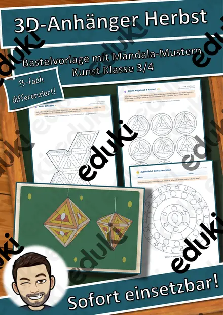
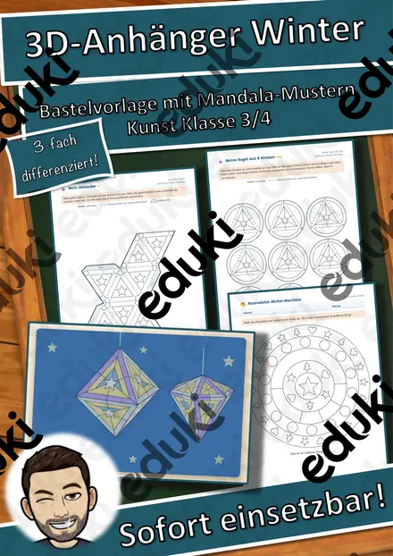
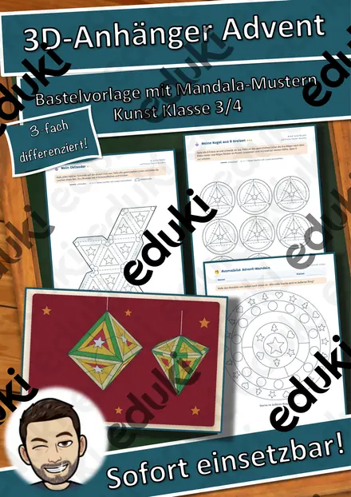
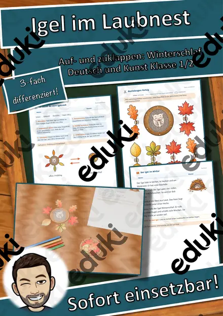
Differenzierte Lese-Abenteuer in drei Niveaustufen: Lageplan, Hörverstehen mit QR-Code, Rätselseite, Lösungswort.


Kompakte Trainingspakete für Klasse 8–10: Zusammenfassung, Übungsaufgaben in Prüfungsform und Musterlösungen.
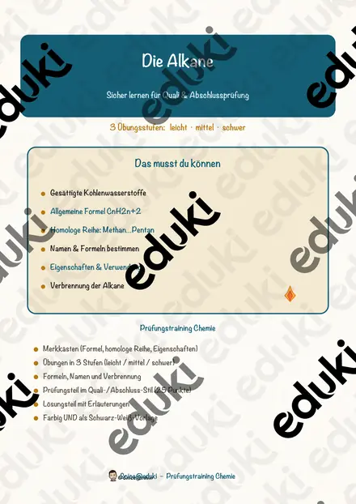

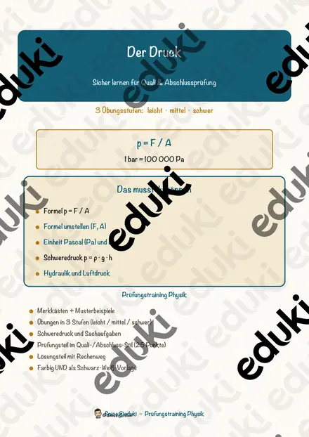
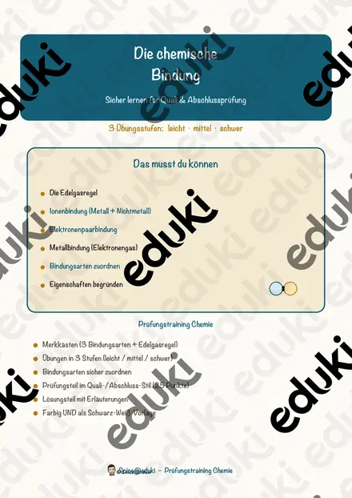
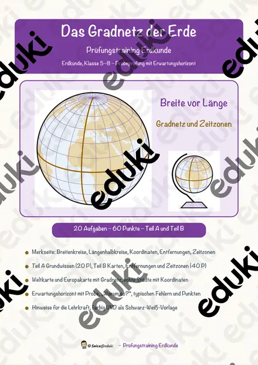

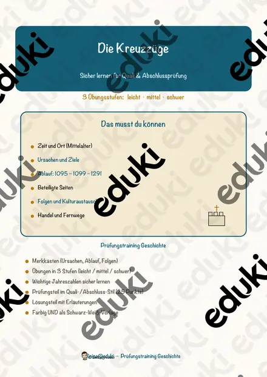
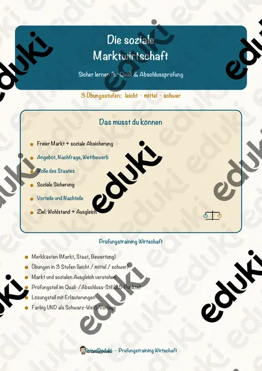
Sachtext als Lückentext mit Wortspeicher, dazu Hörverstehen per QR-Code und Suchsel – mit Musterlösung, in Minuten einsetzbar.


Alle Materialien eines Fachs auf einer Seite – nach Klasse filterbar.
Sprachlich und inhaltlich auf die Jahrgangsstufe abgestimmt.
Praxis-Tipps aus meinem Unterricht.
Eine Vertretungsstunde kommt oft kurzfristig und verlangt trotzdem eine sinnvolle Aufgabe, die Schülerinnen und Schüler möglichst selbstständig bearbeiten …
Wenn einige Kinder ihre Aufgaben bereits erledigt haben, während andere noch rechnen, entsteht schnell Unruhe. Sinnvolle Zusatzaufgaben schaffen eine …
Die Adventszeit bietet viele Anlässe, mathematische Inhalte mit vertrauten Alltagssituationen zu verbinden. Eine Plätzchenbäckerei im Klassenzimmer macht …
Von der Grundschule bis zur 10. Klasse, für alle Schularten: Grundschule, Mittel-, Haupt-, Real-, Ober-, Gesamt- und Gemeinschaftsschule sowie Gymnasium. Auf den Materialien steht keine Klassenstufe – so passen sie zu jeder Lerngruppe.
Ja. Jedes Material enthält eine Musterlösung bzw. ein Lösungsblatt. Lesespurgeschichten haben zusätzlich ein Lösungswort zur Selbstkontrolle.
Ein differenziertes Lese- und Sachmaterial: Die Klasse liest eine Geschichte in drei Niveaustufen, folgt Hinweisen über einen Lageplan von Station zu Station und sammelt Buchstaben für ein Lösungswort. Dazu gehören Hörverstehen per QR-Code, Rätselseite, Ausmalbild und Lösungen – in Farbe und als Schwarz-Weiß-Kopiervorlage.
Zwei neue Reihen für die Grundschule. Rechenwelten sind analoge Mathe-Rollenspiele für Klasse 1–4: Die Klasse spielt zum Beispiel einen Marktstand nach und rechnet dabei. Lesespaziergänge sind für Klasse 2–4: Zehn Bildkarten hängen im Raum, die Kinder lesen kurze Abschnitte, suchen die passende Karte und sammeln Buchstaben für ein Lösungswort. Beide gibt es genau 3-fach differenziert (★/★★/★★★).
Auf dem Arbeitsblatt ist ein QR-Code aufgedruckt. Die Lernenden scannen ihn mit Tablet oder Handy und hören den Text – ohne App, ohne Anmeldung. So üben sie Zuhören und Lesen zugleich.
Als PDF zum Ausdrucken, in Farbe und kopierfreundlich in Schwarz-Weiß. Nach dem Kauf bei eduki stehen die Dateien sofort zum Download bereit.
Die Themen orientieren sich an den Lehrplänen aller Bundesländer (z. B. LehrplanPLUS, Bildungspläne, Rahmenlehrpläne) und decken die gängigen Kernthemen der Fächer ab. In der Beschreibung jedes Materials sind die Lehrplanbezüge genannt.
Hinter Snice Unterricht steht eine Lehrkraft aus der Praxis. Alle Materialien entstehen aus der Unterrichtspraxis, werden inhaltlich geprüft und laufend erweitert – damit du weniger vorbereitest und mehr unterrichtest. Mehr über mich →